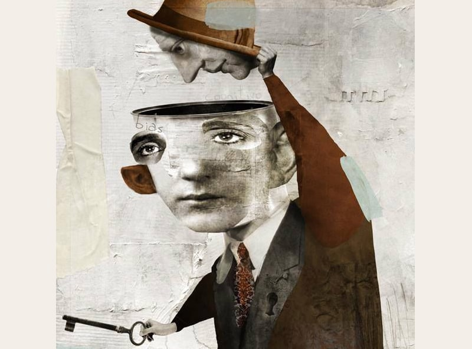

Хотел с вами поделиться одним странным наблюдением - обратил внимание несколько лет назад… ну так, мимоходом. А потом стал замечать всё чаще и чаще. Просто в жизни.
Речь о том, когда слова человека прямо противоречат его поступкам, или образ прямо противоречит поведению. Причем, как на уровне отдельных людей, так и на уровне сообществ.
Например, прихожу я на выставку (знакомые позвали). Выставка маленькая, провинциальная, куча художников - сборная солянка. Обратил внимание на работы одного художника: китч просто дичайший, примитивный донельзя, как на уровне исполнения, так и на уровне смыслов… ну полное фуфло… безапелляционное, даже говорить не о чем. Подхожу, читаю информационный лист: там написано, что у художника мощное художественное образование (УРГАХА), огромный эстетический кругозор, а также уникальный авторский язык, который проникает в самые глубины смыслов и использует, очень мастерски, все достижения традиционной и современной художественной школы.
Даже не знаю как вам буквами передать этот тотальный когнитивный диссонанс!
Или, скажем, натыкаюсь на лекции одной женщины, профессионального психолога, которая на протяжении многих лет рассказывает о важности мужской энергии в нашем мире, консультирует по вопросам сохранения семьи, выстраивания долгосрочных отношений и тп. Так получилось, что я давно знаю ее лично и знаю, что она… четыре раза была замужем, причем все разы как под копирку с мужиками «ни-рыба-ни-мясо» и с дикими скандалами по итогу.
Или еще. Вы знаете, что я всегда читаю все комментарии. Так вот, когда смысл комментария прямо противоречит фактической позиции или образу человека - это просто какой-то жуткий тренд. Например, пишет мне человек: что мои мнения-тексты неадекватные и заумно-отвлеченные, что я вообще не имею права что-то говорить, поскольку во мне нет сопереживания, сочувствия и честности, так как для этого необходимо находиться внутри ситуации, но быть смелым и независимым. Захожу в профиль автора комментария… и это оказывается ассоциация русских художников, живущих в одной из европейских столиц и финансируемых за счет одного печально-известного фонда!
Или еще. Работали мы с одним мужиком (заказчик). Чуть ли не каждый день он говорил о том, что для него самое важное - это диалог, что все проблемы возникают из-за недопонимания и недостаточности общения, настаивал на участии в производственных оперативках и всё такое. Через две недели после окончания и сдачи работ нам как снег на голову пришло уведомление о том, что он подал на нас в суд.
Я вам так скажу, таких историй - миллион.
И это уже не мир «постправды», когда в хаосе интерпретаций теряется факт и даже сама «фактичность» определяется не тем «так это или не так», а тем, кто и сколько об этом говорит. Это что-то другое. Это какие-то масштабные изменения в самой структуре человеческого мышления. Потому что… это ведь не ложь, не «хитрый замысел коварных людей». Здесь люди не замышляют что-то эдакое - они реально не видят этих противоречий! Причем, когда им на это указываешь, они либо резко впадают в агрессию, либо смотрят на тебя как баран на новые ворота, не понимая о каких противоречиях вообще речь. Когнитивного диссонанса не возникает, этот механизм психики перестает работать.
«Когнитивный диссонанс - состояние психического дискомфорта индивида, вызванное столкновением в его сознании конфликтующих представлений: идей, фактов, ценностей или эмоций».
Когнитивный диссонанс - это такой механизм, который заставляет психику что-то делать со смысловым противоречием: менять свою позицию, разбираться в сути дела или наоборот (что случается чаще), оправдывать противоречие, либо старательно избегать его. Но ведь ни того, ни другого не происходит. Люди просто его не видят, они вообще не осознают это как проблему, как будто смысловая связность перестала быть важнейшим инструментом человеческой психики.
И тут два варианта: или у людей массово «вышибает пробки» из-за нестабильности мира и агрессивности информационной среды, или мы и правда меняемся, перестраивая свой когнитивный аппарат под неведомые цели.
PS: На фото картина Рихарда Гюльзенбека

